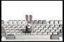

Thank you for purchasing the RONBOARD Mk. II ™®
How did I come up with this ingenius design, you ask? It's actually very simple...
I looked at my keyboard and said THIS IS WAY TOO MANY BUTTONS 
Why do you need a button for every letter, when only need 10??
The RONBOX Mk.II™® operates on a grid using only what's needed: half of the top row and half of the bottom row of a standard, boring keyboard. the top row of the RONBOARD Mk.II is every-other button on the top row of a your standard keyboard. If you ever want to input one of the keys that doesn't have its own button, simply press the two buttons that would normally be on either side of it!
For example, if you want to input an R on the RONBOARD Mk.II™®, simply press both the T and E keys
+  =
=
Warning: it is current not possible to type the letter P